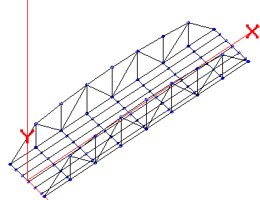

Simple Truss Example Using Nodal BC
Not all members in a bridge structure need to be included in the model. Since bracing and secondary members are not rated, if possible it is often better to remove these members from the analysis and replace their effects with nodal boundary conditions. Each nodal boundary condition removes one equation from the stiffness model, consequently speeding up the calculations, and helps to simplify the analysis.
Consider the following Simple Truss Example.
Member End Moment releases:
Stringers have complete moment release at both ends. (Codes: 111000 at both the A and B ends.)
Floor Beams have complete moment release at both ends; the intermediate ends have moment continuity. (Codes: 111000 at ends that tie into the truss.)
Truss members have moment releases at both ends for the local Y and Z axes. (Codes: 110000 at both ends.)
The slab mesh has an expansion joint at each floor beam.
Using Boundary Conditions for the bracing members.
Since bracing members are not rated, they can often be left out of the analysis if their stiffness effects are not significant to the model. In this example the top cord bracing is removed and the nodes along the top cord are all constrained in the Z translation direction. This will prevent the truss from falling down but the truss is still free to deflect down and longitudinally.
Floor Beam Node Constraints.
Without nodal constraints, the floor beams will be free to roll like logs in the water. The truss members offer no resistance to this motion since they have their end moments released. Also, the stringers do not resist this rolling because their end moment continuity is also released. Only one of the internal nodes for the floor beams needs to be constrained for rotation about the Z-axis, but for sake of symmetry, all of the floor beams in this model can be safely constrained.
Other Required Nodal Constraints.
The truss members do not provide any stiffness to prevent the top cord nodes from spinning about the Y-axis. Thus, the top cord nodes need to be rotationally constrained about the Y-axis. This is in addition to the Z translation constraint already discussed above.
The nodes along the bottom cord will also spin about the Y-axis and need to constrained.